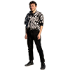

About the project
Prologue
This project was realized as part of the Data Visualization course of Politecnico di Milano.
It originated from a bigger research dedicated to the topic of the green narrative in architecture renders.
We analyzed the different methods with which the renders of eco-conscious projects tried to communicate their green values to the public.
Since all of the projects we selected are yet to be completed, their renderings are still set in the “city of the future”,
which prompted the question “what does the city of the future look like?”
However we decided to give our research a more anthropological twist, focusing on the society of the city of the future.
We therefore analyzed the people in renders, how they dress and what they seem to be doing. We also decided to include
the different means of transportation depicted in the renders, as they can tell us a lot about the values of this imaginary future society.
Selecting the projects
As we mentioned before, our project began as an analysis about the green narrative in architecture renders.
For this reason, when selecting the projects to include in our research, we chose to start from those that already sold themselves as “green projects”.
This led us to identify the C40 contest, a competition for innovative and eco-conscious projects in different cities around the world.
Being from Milan, we decided to start from the nine C40 projects of this city. Since all the projects in the C40 contest concerned public spaces,
we decided to expand our dataset to include private projects in the city of Milan, not necessarily bound to Reinventing Cities’ rules.
As of now, So Cliché only includes projects that will be built in Milan, but the structure of the archive gives the possibility to eventually expand to other cities. The projects included are:
As of now, So Cliché only includes projects that will be built in Milan, but the structure of the archive gives the possibility to eventually expand to other cities. The projects included are:
The process
The first step in our research process was to find the renders related to the selected projects.
The main sites we took them from were the C40 Reinventing Cities site,
the Urbanfile blog and the websites of the architects that designed them.
We included no more than 10 pictures per project, prioritizing images with a higher resolution.
You can find all of the renders that we used for our project here.
We included no more than 10 pictures per project, prioritizing images with a higher resolution.
You can find all of the renders that we used for our project here.
Once the pictures were collected, we analyzed all the people in the renders using Photoshop, creating two different files for each of them:
- The first file is a png cutout of the person, which we resized and fitted in a 100x100 pixel frame. This enables us to analyze the person outside of their context. In those cases where there was a group of people, we chose to treat them as a single entity, prioritizing the social aspect of the group over its single components.
- In the second file we highlighted the people inside the render using green rectangles, giving us the opportunity to see the person inside the context in which they were originally placed. In those cases where an individual showed up multiple times in the same render, we created a single image with multiple green rectangles.

This process was all done by hand for accuracy, since in many cases the people in renders were too small to be recognized by an AI.
The two different files corresponding to the same person were named using a prefix that indicates the project and the render they came from,
and a suffix indicating the person.

Using this type of naming proved to be useful to organize the files as well as for the coding part of this project.
Once we collected all of the data, our initial idea was to categorize them by applying filters as objective as possible to them. These filters were predominantly based on the type of activity that those people were doing, plus some others regarding their context.
Once we collected all of the data, our initial idea was to categorize them by applying filters as objective as possible to them. These filters were predominantly based on the type of activity that those people were doing, plus some others regarding their context.
Filters for people
- Hair length
- Clothing type (sportswear, business...)
- Age
- Social interactions
- Activity
- Position in render (foreground, middle ground or background)
- Project
- Year the project will be completed
Filters for means of transportation
- Pricetag
- Type of transport (car, public transport, soft mobility)
- Fuel (fossil fuel, electric, man-powered)
- Social interactions
- Position in render
- Project
While trying to apply these filters, it occurred to us that doing a completely objective categorization would be impossible since the small
resolution of our files forced us to make assumptions about those people. Moreover, we noticed some “groups” forming in our data,
showing recurring activities, behaviors or peculiarities among the people in renders. For these reasons, we shifted our approach to the
categorization of our dataset, rejecting the idea of creating objective filters and embracing the newfound categories,
which we could define as “clichés”. These clichés were defined taking into account the fact that our dataset included means
of transportation in addition to people.
For example, while extracting all the people in renders, we noticed that many of them were wearing a business attire, regardless of the context in which they were placed.
For example, while extracting all the people in renders, we noticed that many of them were wearing a business attire, regardless of the context in which they were placed.

We then decided to call them “Walf of Wall Street”, a reference to the movie that easily conveys the image of someone dressed like a businessman.
Each one of these stereotypes was given a code name, which we then inserted in a spreadsheet to categorize our files.
Each one of these stereotypes was given a code name, which we then inserted in a spreadsheet to categorize our files.
| S01 | Shopaholic |
| S02 | Fridays for future |
| S03 | 5g enthusiast |
| S04 | Bookworm cutie |
| S05 | Wolf of Wall Street |
| S06 | Lovey dovey |
| S07 | Fashion diva |
| S08 | F is for family |
| S09 | #Squad |
| S10 | Socks and sandals |
| S11 | Place-older |
| S12 | Find me on soundcloud |
| S13 | Tree-hugger |
| S14 | A child |
| S15 | Freshmen |
| S16 | Something futuristic |
| S17 | PETA |
| S18 | Hustlers |
| S19 | No pain, no gain |
It is important to note that these categories do not include the entirety of our dataset, some of the people or means
of transportation did not fit in these clichés. We decided to give them the “S00” empty tag.
To attract a broader audience and make our project more captivating we opted for an easy and ironic tone of voice. When writing the definitions of our clichés we took inspiration from the UrbanDictionary website.
To attract a broader audience and make our project more captivating we opted for an easy and ironic tone of voice. When writing the definitions of our clichés we took inspiration from the UrbanDictionary website.
| Shopaholic | A person that loves shopping. Usually seen in their natural habitat surrounded by shopping bags. |
| Fridays for future | Green means of transportation that could actually give us a chance of surviving the climate crysis. |
| 5g enthusiast | Those people who feel the need to always be connected with some kind of device, and actually wish Bill Gates could inject them with chips. |
| Bookworm cutie | A cute person, who loves to read books and being cute. |
| Wolf of Wall Street | People who take the phrase "dress for the job" too literally. |
| Lovey dovey | Kissing, hugging, and all that gushy stuff people who are in "love" do. |
| Fashion diva | A person dressed like a model strutting down a runway every time they leave their house. |
| F is for family | The kind of perfect nuclear family you only see in Christmas TV commercials. |
| #Squad | Your boys, people you would do anything for. |
| Socks and sandals | The fashion choice that sets a real tourist apart. |
| Place-older | The og generation, old but gold, those who can't even send an e-mail. |
| Find me on soundcloud | Musical artists performing in the streets giving you the opportunity to walk around with an actual sountrack like in the movies. |
| Tree-hugger | ople who prefer spending their days gardening rather than dealing with other humans. |
| A child | An unaccompanied minor wandering around, possibly after escaping their parents. |
| Freshmen | A young person that still thinks the time you spend at university are the best years of your life. |
| Something futuristic | People or objects that look like they are straight out of a sci-fi novel. |
| PETA | The kind of people who treat their pets better then their children. Because, after all, their dog never let them down. |
| Hustlers | Someone who uses their skill, talents, or instincts to make a quick buck. |
| No pain, no gain | Gym bros and fitness enthusiasts who will surely let you know how much they can lift without you even asking. |
The division of the future society in clichés became the main focus of our project, and this led us to the naming "So Cliché".
So Cliché is the process by which a particular actor becomes strongly identified with a specific character, similar to the way in which
the future society depicted in renders is identified by specific roles.
To this naming we added a subtitle to better explain our project, clarifying our project’s ties with renderings and the world of architecture: Predicting the future one render at the time.
We then built the structure of our website, starting with the homepage. Here, we explain the goal of our project and the key role of people in renders.
Through the homepage you can access two sections that correspond to the types of analysis we applied to our dataset: the qualitative analysis, which is the categorization into clichés of the people in renders, and the quantitative analysis, which is the visualization of how many people of each cliché is present in the city of Milan.
In the first section the user can explore the different clichés in which we categorized our dataset. Each cliché is introduced by its description, followed by the number of elements inside of it and the elements themselves.
We decided to also give some context information to each one of the people in our dataset. In addition to the division in clichés, we added more information in the pop-up that appears each time you click on a person: the user will be able to know the project from which that particular person comes and its city.
To this naming we added a subtitle to better explain our project, clarifying our project’s ties with renderings and the world of architecture: Predicting the future one render at the time.
We then built the structure of our website, starting with the homepage. Here, we explain the goal of our project and the key role of people in renders.
Through the homepage you can access two sections that correspond to the types of analysis we applied to our dataset: the qualitative analysis, which is the categorization into clichés of the people in renders, and the quantitative analysis, which is the visualization of how many people of each cliché is present in the city of Milan.
In the first section the user can explore the different clichés in which we categorized our dataset. Each cliché is introduced by its description, followed by the number of elements inside of it and the elements themselves.
We decided to also give some context information to each one of the people in our dataset. In addition to the division in clichés, we added more information in the pop-up that appears each time you click on a person: the user will be able to know the project from which that particular person comes and its city.

Still, we wanted the user to be able to better understand “the city of the future”.
We therefore designed the second section of our website, where we will present a clusterization of our clichés.
Here the user will have the opportunity to see which are the more represented clichés in the city of Milan.

We also implemented some of the original filters we intended to use to categorize people.
For example the user will be able to filter the clusters and show only the elements belonging to a specific project,
seeing which are the clichés more represented in each one of them, or filter them based on their position inside of the renders
(foreground, middle ground or background), to see which elements are given more importance.
To import all the different elements of our dataset, with all of their different tags
(cliché, project, city and position in the render), we created a spreadsheet containing all of this information.
You can access this spreadsheet here.
Conclusions
This project is to be considered a never-ending work in progress, as it could be expanded with new projects and new cities.
Now that you know our process and how we operated you could potentially be part of this expansion,
predicting the future one render at the time.
The team
So Cliché is brought to you by a group of six communication design students from Politecnico di Milano
with a passion for manually cutting out people from renders and crying over the D3 library.
Francesco Battistoni No pain, no gain

Carlo Boschis Fashion diva
Federica Inzani Bookworm cutie

Federico Meani Fridays for future

Mattia Mertens 5g enthusiast

Ottavia Robuschi Socks and sandals